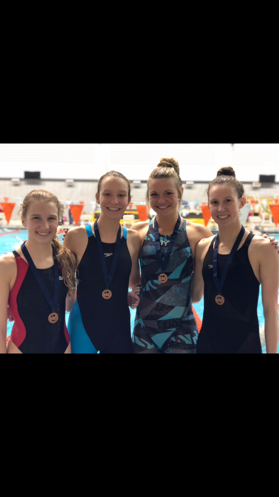
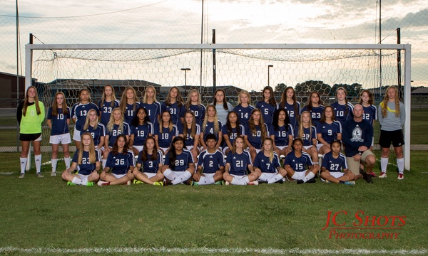
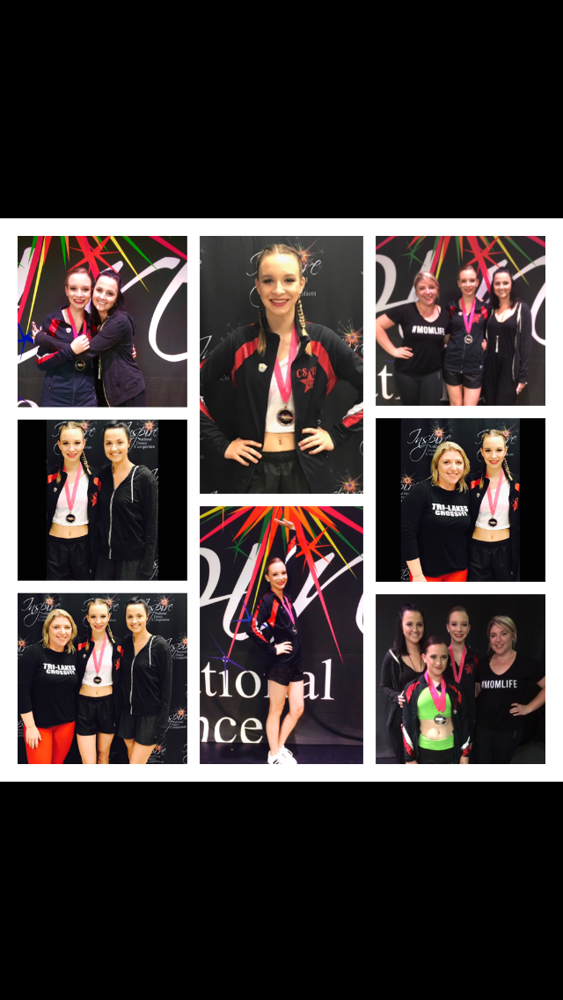

Hello, My Name Is Elizabeth Collins And Welcome To My Blog
Here are a few things about me

My favorite hoddy is riding horses! I ride every chance I get. I´m adventurous, daring and love to be outside with nature

Ice Cream is always a go to!!!!!

I am very active and do alot of sports such as competative swim. I have been swimming for 6 years and have gone to states in Knoxville and swam an UT 3 times getting 6th in the state in a 200 free relay! I also compete in sprint races such as the 50 free and 100 free getting to states in those events as well

I also play soccer, and have recently started playing for my highschool

I dance and do regular dance classes and competition dance classes. I not only love to dance but I love my dance family. My dance coaches, Ashlie and Shelby, push me to my full potential. I remember my first competition, I was nervious, it was my first solo and I messed up the end of my dance and was heart broken. I improvised and could feel the heat go to my face. Once I got off the stage I broke into tears not that I was sad that I messed up, but that I let my dance teachers down. Since then, I have been determined to be the best dancer I can be and continue my passion with the help from my Dance Fam!!
I am involved in many clubs at my school. My favorite though would have to be FBLA (Future Business Leaders Of America). Through this club we not only have fun but we learn business ethics for the real world. I have been a loyal member for four years, 2 of which I have served as treasurer, and one I have served as Vice President. Every year all the members of FBLA get together to build an amazing float for the homecoming parade. We also participate in